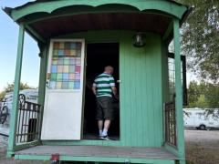
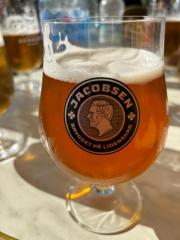
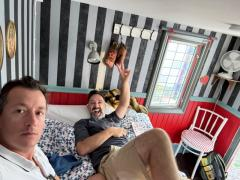
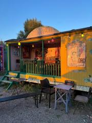
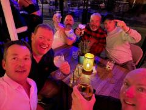
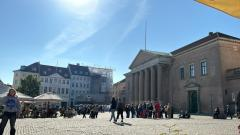
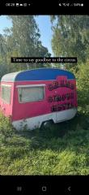
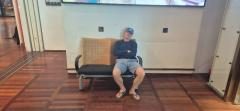

What A Circus This Tour Has Become
Climb 1,881 stairs or set sail for another country….
There’s only one winner in that debate and to my delight (mainly because it got me out of the steps) our leader announces we are about to set sail for Malmo, Sweden.
The only thing more impressive than the fact that Jimbotours has made it to its “Sweet 16” is the bridge that connects Denmark and Sweden. The Oresund Bridge is truly something to behold as it sweeps across the 5 miles of water and given the weather we have been blessed with on this trip all you can see for miles is the sun reflecting off the water. It is so impressive that it is has its passengers stunned into silence, that is except Stevie B and Martin who can be heard up and down the carriage debating the latest Gaelic Football season.
The 5 miles goes by in a flash and we are soon ready to set foot in what is Jimbotours 22nd country, I’ve been to 21 of them and no I don’t want to talk about fecking Norway. Moving swiftly on we exit Malmo Central station (unaware at this point there are two bastard train Malmo stations which would have come in handy the next day) and make our way immediately to yet another magical, sun kissed market square for light refreshments. The usual order is submitted; 5 normal beers and one weird beer for Patch and I look up to the cloudless sky and exhale a casual relaxing breath…
Everything has been majestic so far this trip (minus the Olso debacle) our surroundings have been phenomenal, the beer has been amazing, the people we’ve met have been so friendly and even the hostel as per JOD’s previous blog was the best we’ve ever stayed in – I mean, we’ve finally got this travelling thing down to a perfect science right? Wrong.
Definition: Circus noun
a travelling company of acrobats, clowns, and other entertainers which gives performances, typically in a large tent, in a series of different places.
Okay, so I’m not sure about the acrobat bit but the rest of it sounds like it could be mistaken for me and my fellow companions on a Jimbotour right? We’re an entertaining bunch who relish the opportunity to perform our unique skillset of quaffing gallons of lager in a series of different places. I guess we kind of like a circus in some ways….
Fitting then that this evenings digs is The Grand Circus Hotel. I assure you that the words Grand and Hotel should not belong in their title. It is genuinely a bloody Circus that Jimbo has booked us to stay in for the evening and the dwellings are a series of different old traveller wagons. Suddenly I wish I’d chosen the 1,881 steps…..
After a brief terrifying few moments where it dawned on Martin and I that we would be sharing the worlds smallest double bed together, I can only presume that Jimbo wanted me to also know what its like to be intimate with someone’s cousin, we settled on an upgraded room. I use the term upgrade loosely, but I shouldn’t complain too much as poor RP would end up in that very bed later with a poorly Patch after one too many IPA’s.
It turns out that a mere few hundred metres up the road from the circus a heavy metal music festival was taking place. Thousands of hairy, leather clad, sweaty, smelly rockers were having the time of their lives and ironically all of these fine locals turned their nose up at the thought of sleeping in the Circus… There is another irony here, later that evening the police would be summoned to that very site, not enforce the law on some enormous Viking Hells Angel Rocker but our very own miscreant who I shall not go to type on their name for fear of repatriation. Lets just say that as bad as weird beers are to drink, they taste even worse coming back up. That’s a Jimbotours first.
Malmo is a cool town. We embarked on yet another amazing evening in Europe and as has become custom these days there was many a game of finger spoof with the locals. It never ceases to amaze me how quickly people pick up that game (other than Danny in Bulgaria) and embrace what it is about – convening around the centre of a table to share laughs and do your best to avoid consuming some god awful schnapps.
As the night came to a close Martin completed the trifecta of Jimbotours diet with a kebab having previously consumer a hotdog and a burger earlier in the day and we headed back to the circus for one of Jimbotours less comfortable nights sleep.
So there we have it, another tour in the bag, more dots on the map, one of which now I haven’t visited (not happy) and memories for life. Its my favourite thing to do and I encourage you all to jump on plane, train or catamaran, find a table, put an empty glass in the middle of it and invite some strangers to play.
Till next time.
Shauny G.
Photographs


{kind=link}

{kind=link}

{kind=link}

{kind=link}

{kind=link}

{kind=link}

{kind=link}

{kind=link}
